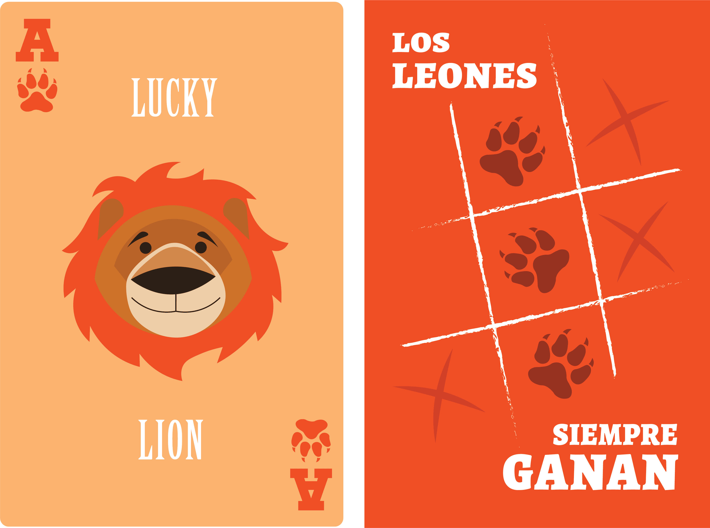
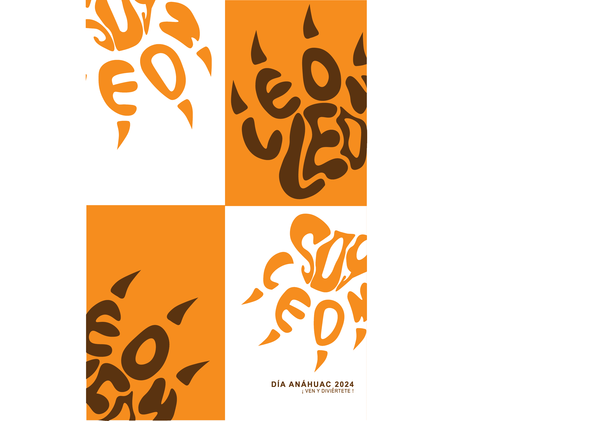

Packaging Design
This project was developed as part of the visual identity for Día Anáhuac 2024, blending illustration with branding to create a vibrant and cohesive graphic system.
The illustrations were designed to capture the energy, diversity, and spirit of the university community through bold colors, dynamic compositions, and expressive characters.
The result is a visual language that not only enhances the event’s communication materials but also strengthens its emotional connection with the audience, reinforcing the sense of belonging and celebration..

